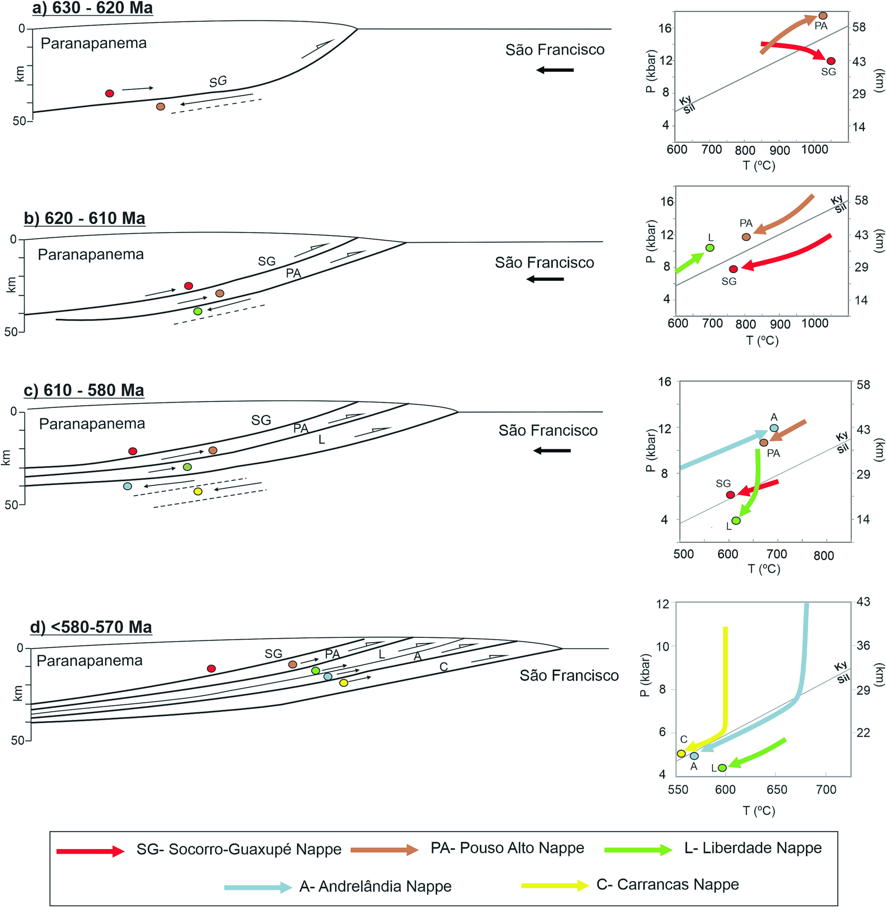

In-sequence tectonic evolution of Ediacaran nappes in the southeastern branch of the Brasília Orogen (SE Brazil): Constraints from metamorphic iterative thermodynamic modeling and monazite petrochronoly

Resumo em Português
A evolução metamórfica e cinemática de rochas de grau médio-alto do Sistema de Nappes Andrelândia (SNA), cunha orogênica do Orógeno Brasília Meridional (OBM), foi investigada neste trabalho. Observações de campo e microestruturais foram combinadas com petrologia metamórfica (modelagem termodinâmica iterativa) e petrocronologia em monazita para reconstruir a história tectono-metamórfica das rochas do SNA.A Nappe Liberdade experienciou metamorfismo progressivo em ~610 Ma, atingindo condições metamórficas de pico de ~650 °C e 9,5–10 kbar, seguido de descompressão isotérmica associada ao transporte tectônico em direção a SE, em ~570 Ma. A Nappe Andrelândia, por sua vez, experienciou metamorfismo progressivo mais tardio, em ~580 Ma, atingindo condições de pico de ~680 °C e 11–12 kbar. Os resultados obtidos indicam que cada nappe do Sistema Andrelândia registra um único ciclo metamórfico de soterramento e descompressão, embora em idades diferentes ao longo de um período de ~60 Ma, entre 630 e 570 Ma. As nappes experienciaram metamorfismo progressivo e retrógrado cujas idades diminuem progressivamente em direção à base da pilha de nappes. Esse padrão é atribuído à propagação de material mais antigo soterrado da cunha orogênica (Nappe Liberdade), por meio de cavalgamentos e dobramentos, sobre rochas recentemente acrecionadas (Nappe Andrelândia), conduzindo um evento metamórfico mais jovem no footwall das nappes dúcteis cavalgadas. Esse mecanismo é consistente com a arquitetura de dobras e cavalgamentos em sequência do SNA.